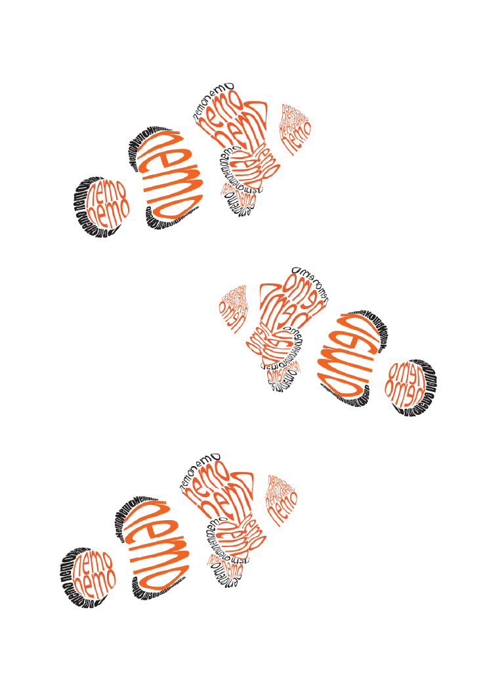

Hi, ik ben Sacha Scholten
Creative software developer & Grafisch designer
Over mij
Hoi! Ik ben Sacha Scholten, 24 jaar oud. Ik ben op het Gra Lyceum Utrecht begonnen met de opleiding als Grafisch Voormgever en heb deze afgerond, waarna ik ben uitgegroeid als software developer. Ik ben begonnen als Game Developer voor 2 jaar, daarna besloot ik de opleiding Creative Software Developer te volgen om meer te leren over verschillende programmeertalen.
Vrije tijd
In mijn vrije tijd kijk ik graag films of ga ik naar de bioscoop. Ook teken ik veel (ik ben geen meester, maar overtrek graag).

Soft Skills
Communicatie
Leiderschap
Flexibiliteit
Samenwerking
Luisteren
Stressbestendigheid
Vaardigheden
JavaScript
HTML
Unity
C#
Unreal Engine
Blueprints
Game Design
Photoshop
Indesign
Illustrator